Personal Website
Project Management and other works
My experience at Maiven as the Project Manager
Maiven game’s progress from March 2020 to August 2020
*Disclaimer: all of the information disclosed in this blog post is mainly my personal experience, but all Maiven-related information is permitted by the co-founders to be shared.
When I joined the company in March, the game was starting out with only a goal and a vision: to build a financial management app that features a game to maximize the user experience and engagement. The app would be a free, unique, and beneficial app that merges “gaming” with “personal finance” that consists of banking, budgeting app, resources in the forms of blogs on the website, and a game that helps building better spending habits and fixing bad ones. I have been preparing to write a research thesis on the connection between technology and human well-being, so it was easy for me to capture the mission statement of the co-founders and build a connection with them.
At first, the game was minimal with only a website, a character name, and a character design - Maiv the Fox.
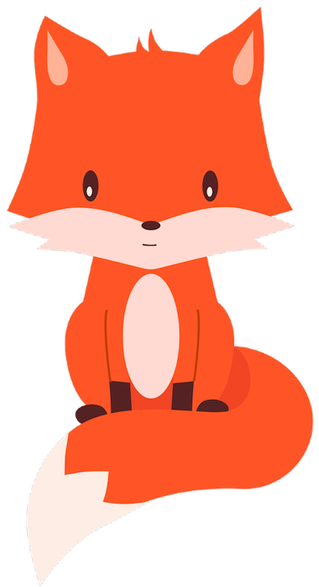A simple game formula calls for a character, a set of simple tasks the character must accomplish (the player’s mission), and something valuable that the game offers to the player. The first version was a maze with gray tiles, and Maiv’s job was to collect mushrooms. However, this version did not satisfy the requirement that the player must be able to get help with acknowledging their spending habits and working towards their financial management goal (either to stop overspending on unnecessary items, or to save more).
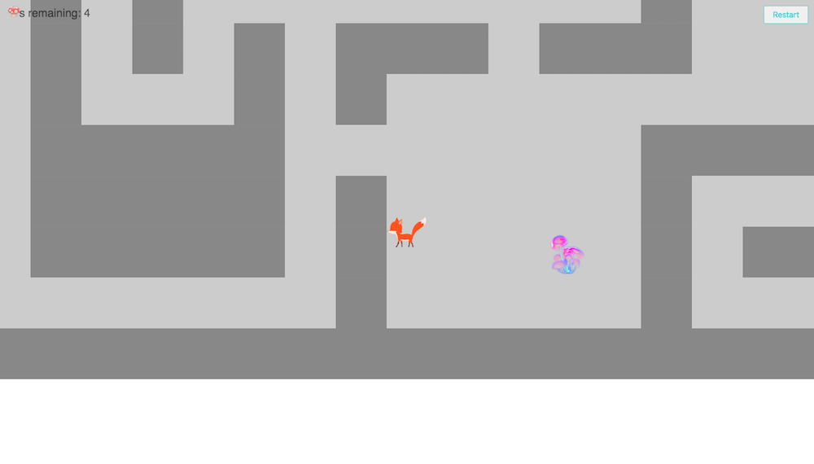The next version consisted of a new map, one of trees and rivers, however still very minimal. One more thing that changed in the game was Maiv’s mission and ability to “shoot” your expenses, or “kill your bills” as represented by spiders - the bigger the charge, the bigger the spider.
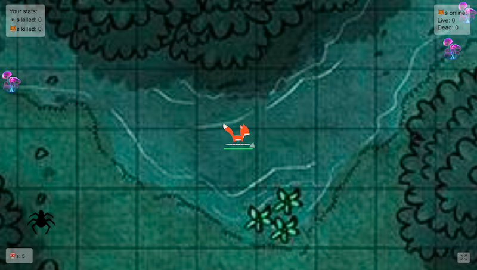The third version, now with actual “villain” designs for each category of spending, seems more fun to play. However, there were more issues - we were really struggling with finding our brand and the exact style of the game, but when we decided on the style, we realized these villain designs weren’t really cutting it.
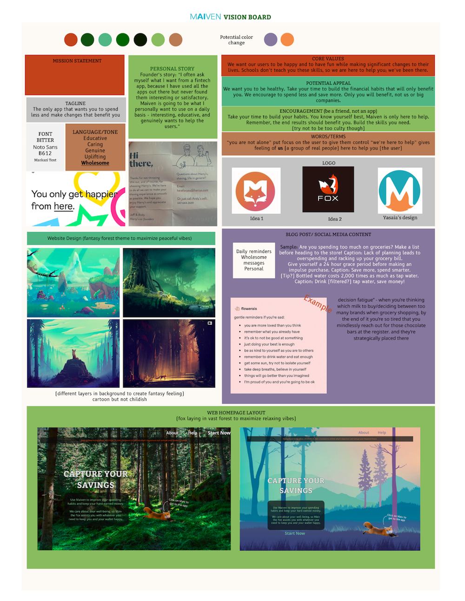The villain designs were then upgraded from these:
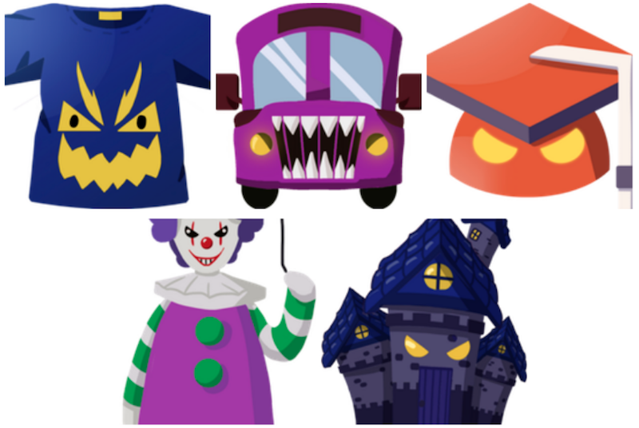To this:
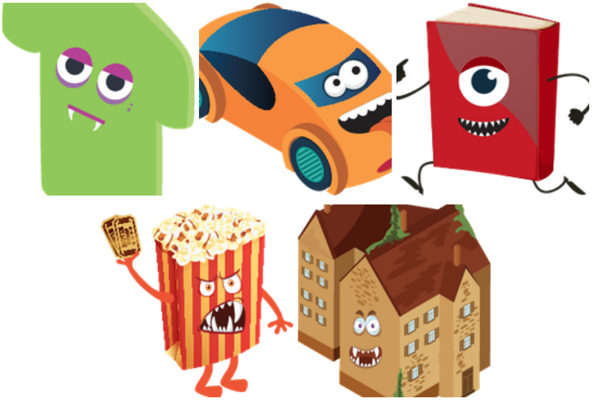The next version is the most crucial one. Now we have expanded our team - there are two game designers, a writer, and a social media intern along with the current existing team. The original artist who designed Maiv the Fox also joined just to help out with the new map and villain designs. Everything is coming together - the map design, new villain designs, the type of game, the different potential directions the game could go into and the challenges those possibilities might bring, etc.
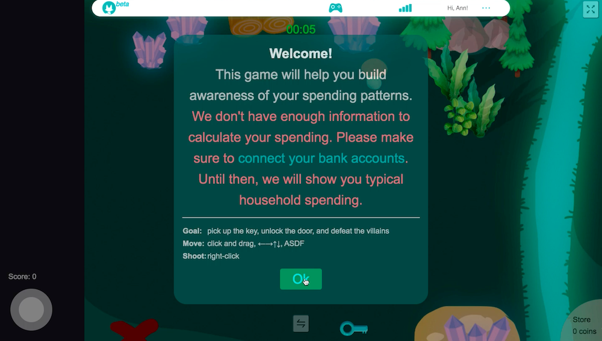 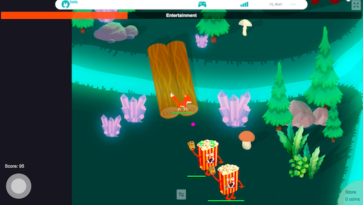There was also a phone version too, as we were getting ready to release the app.
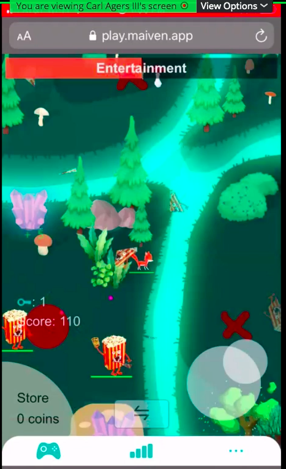Now that there was a foundation, the next step was to strategize new implementations to improve the game and maximize user experience and engagement. These included but not limited to: room-based villain spawns to be changed to wave-based spawns, item drop rate, coin system in shop, item upgrade, multiplayer mode, in-game events, rewards linked to the app, etc.
My Duties as Project Manager
Since the team expanded, I was given more responsibilities and tasks as the Project Manager. We had weekly meetings - one with the game designers and developer that took a big chunk of time and effort because the game needed a lot of work; one with the marketing team which consisted of brainstorming and finalizing plans for social media posts, advertising plan, and weekly blog posts; and a final one on every Thursday to update our status on the tasks we talked about earlier in the week.
I even had the opportunity to meet with the co-founders to discuss the plan in person. Afterwards, I was able to come up with a few documentations for Maiven with the help of Coursera’s Project Management Specialization courses.
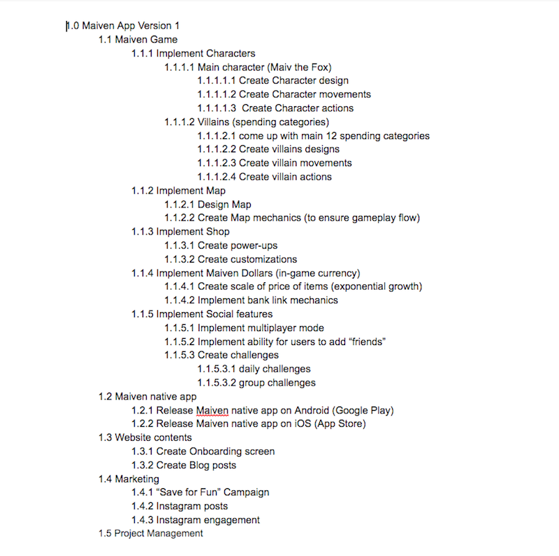 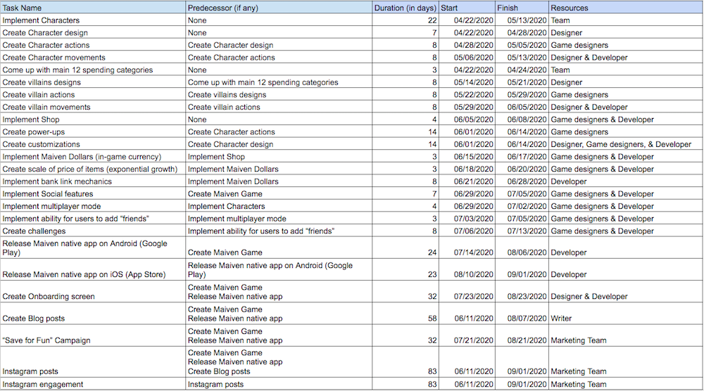 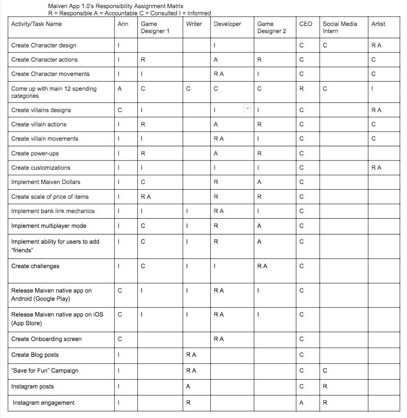 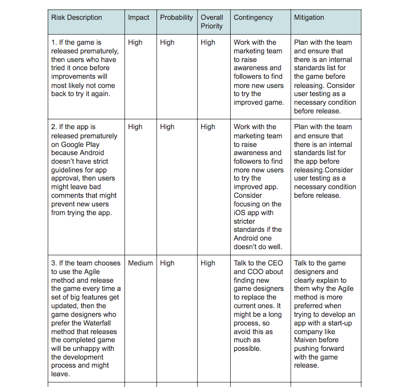Due to unforeseen circumstances, Maiven has taken a hiatus, and my job as its Project Manager has been put on hold. However, we still have an active Slack channel, and I’m still in touch with all the members of the team in hopes we will be able to work together again.
Here is an interview I did with Maiven’s writer, Carl: https://www.maiven.app/post/maiven-interview-series-ann-do
My experience at California Seismic as the Project Manager
California Seismic's progress from June 2020 to Present
California Seismic was started by a single Structural Engineering graduate from UC Berkeley in the year 2018. In Summer 2020, I encouraged the founder to look for interns in order to help out with the website and get the project going. I put the job posting on Indeed, and got a surprisingly overwhelming number of applications, which I think is because COVID-19 was posing a challenge for students to find summer internships. I selected the candidates and interviewed them myself. That’s how we found 7 interns that we worked with over the summer.
Together with the founder, I created a respective schedule to plan tasks and progress for the 8 weeks we were going to spend with the interns.
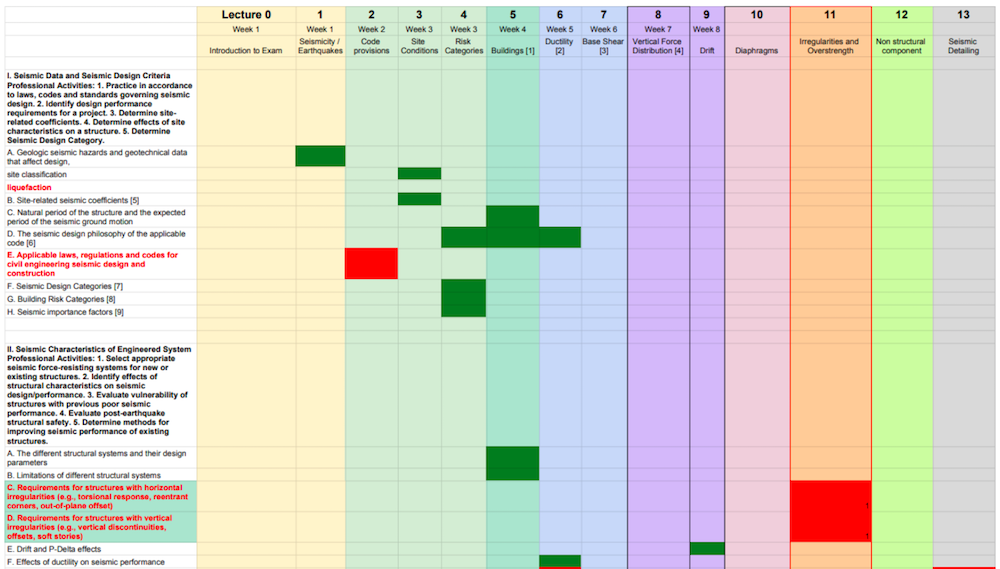Every week was packed with meetings for me: a lecture meeting with the founder to go over the materials, a status update meeting with the whole team at the end of the week, and individual meetings with each intern where not only I get to go over their tasks in more details and address any questions, but so I could get to know them personally and to learn of their goals and fears.
Due to this busy schedule and workflow, the respective schedule I came up with at the beginning wasn’t met at the end of the internship in August. We then had to revise the schedule as a team.
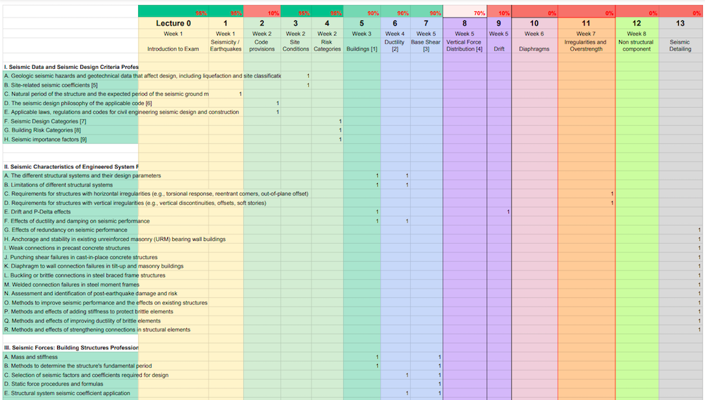The plan then was either for me and the founder to complete the remaining work as soon as we can, or once again put the work on hold if our time doesn’t permit. However, half of the team of interns offered to stay on much to our surprise and delight. Until now, our team is still working on perfecting the resources but at a much slower pace due to everyone’s schedule (all of the interns except one are still in school).
In September, we were able to plan an outing for the team to finally meet in person after days of working closely together through computer screens. It was an incredible experience to see everyone face-to-face and spend a day just enjoying each other’s company. After all, at the end of this project, it would be wonderful to keep in touch with everyone, as it was such a rewarding experience for all of us, especially for me. I always knew the relationships between co-workers and the working environment play a big role in determining a person’s job experience, but working with California Seismic reaffirmed this for me - there are individuals behind each task of every project, and those individuals’ well-being is as important as any achievement or deadline.
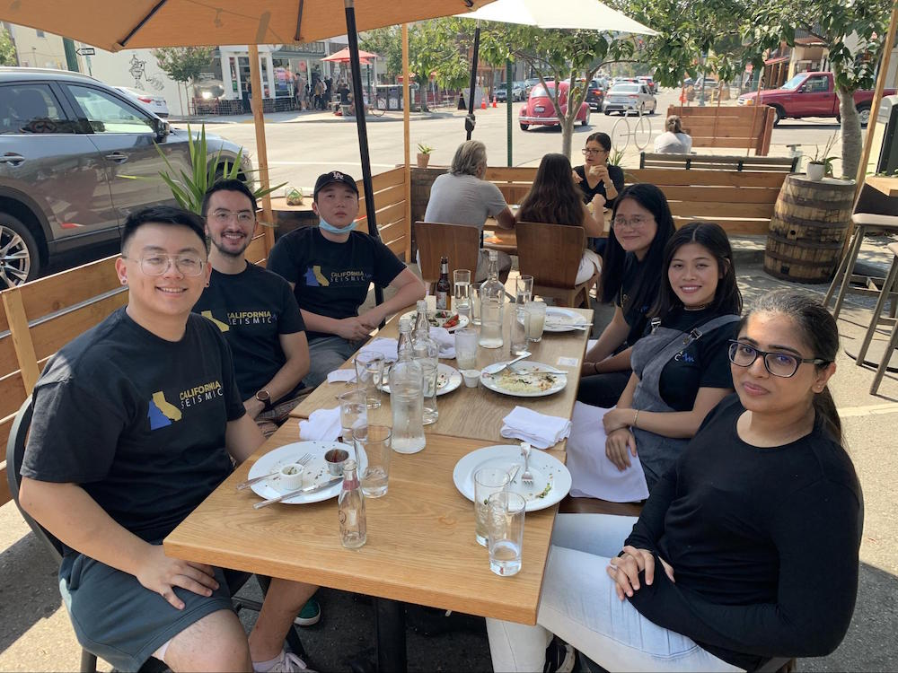Our team with our matching custom shirts.